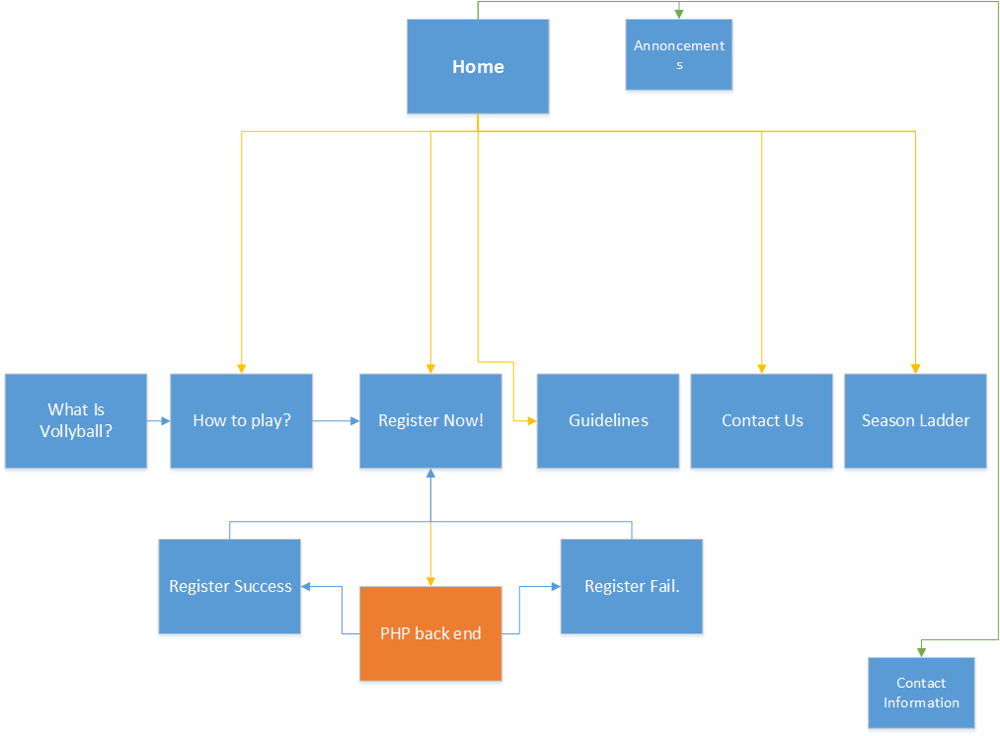

CP1406 - Assignment 1 - Project Plan
Name: Matthew Nielsen
Goals
To increase the number of paying customers - specifically aged 15-30 years - playing Vollyball at Slammers.
Success Evaluation
Success can be determined by the number of registrations, and
registration details, accrued via the sites sign-up form.
Target Audience
Primary audiences - Young teens and adults aged between 15 and 30, looking for fitness or fun activities.
Design plan
- The website will consistently make reference to the word fitness and fun, in an attempt to tap into
audiences that are looking for ways to fulfill fitness or fun related goals.
- The website will incorporate images of "young" and "fit" people having fun while playing Vollyball.
This is designed to imply audience members can gain the same experience by playing at Spinner's, while
simultaneously giving Spinner's a youth vibe.
- The front page of the website will prominently display information and announcements pertaining to the
bar facilities. This is intended to highlight the fun and social aspects of the playing at Spinner's.
- The colour scheme and backdrop of the website will focus on warm, bright, summer colours, and outdoors
scenery. This will entice younger audiences by conveying a since of energy and activeness when visiting
Spinner's.
- The website will feature ready-to-go links to facebook and twitter accounts, in-case owners wish to
link various social media pages with social media audiences.
Site Flowchart

GitHub Repository
GIT HUB LINK - Matthew Nielsen